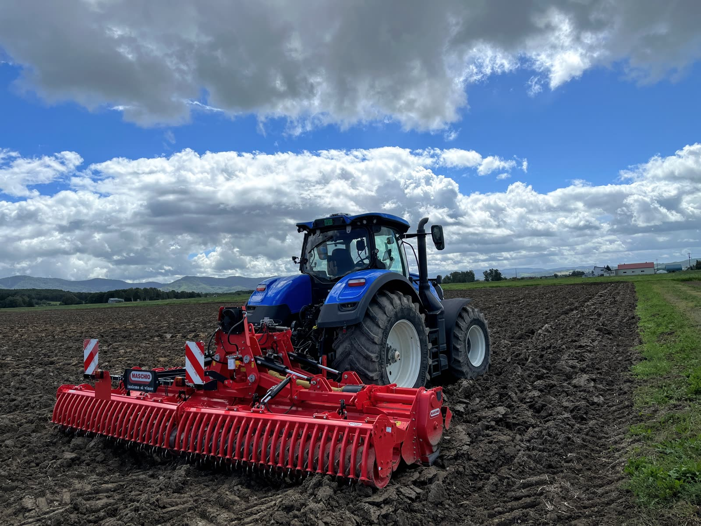
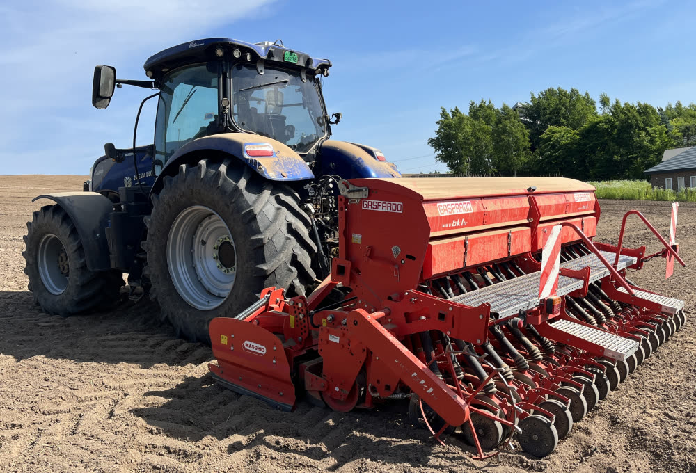
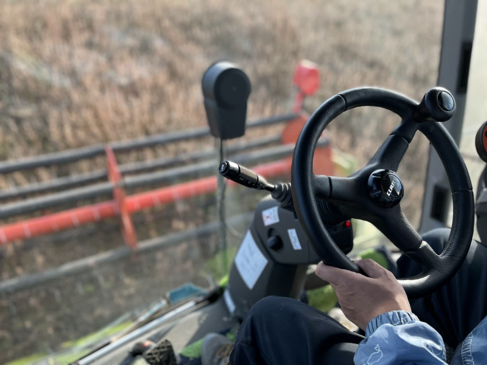
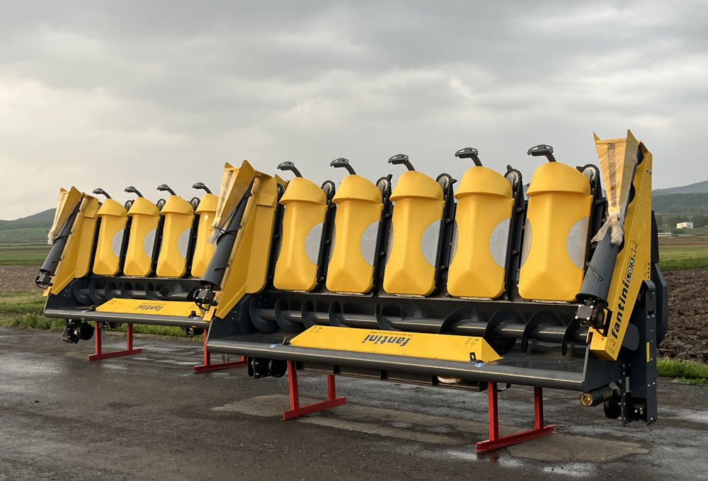
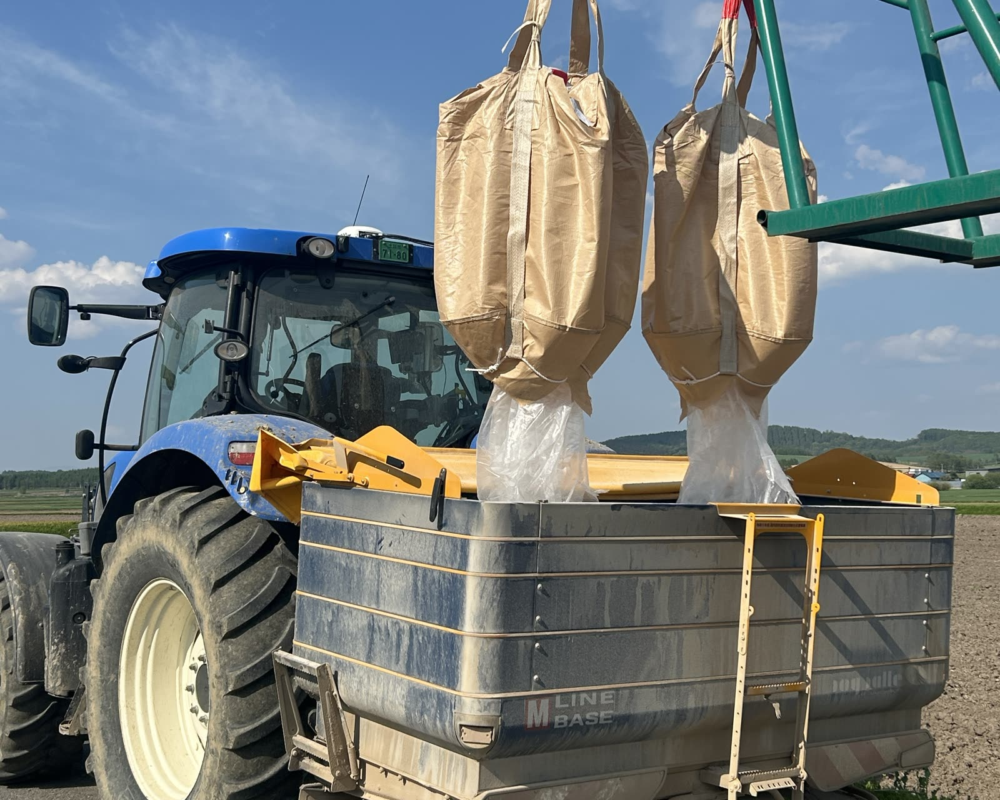
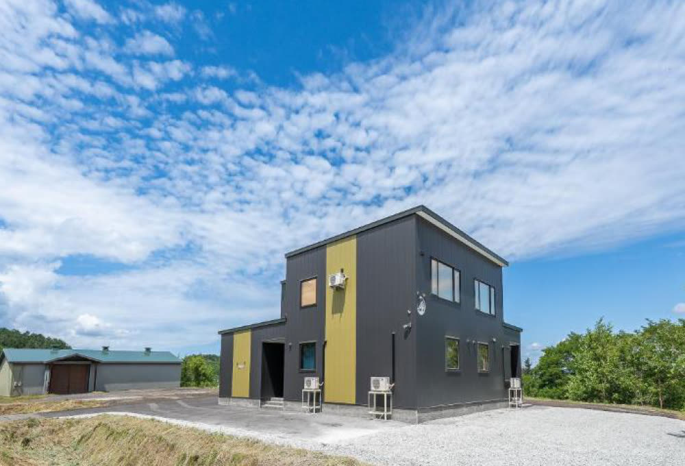
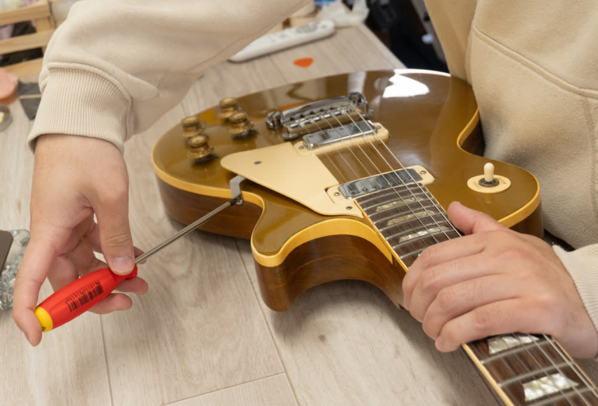
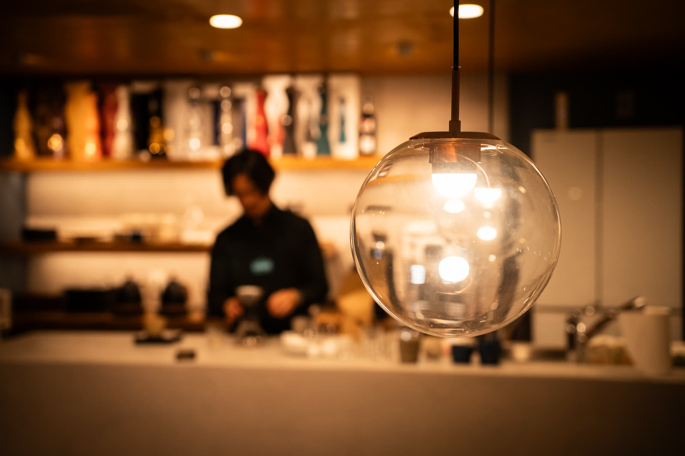

地域の可能性を、
耕しつづける。
私たちは北海道士別市を拠点として、農業を主軸にさまざまな事業を展開しています。
豊かな自然に恵まれたこの地域で、私たちの使命は地域の可能性を最大限に引き出し、持続可能な未来を築くことです。
多様な個性と高い技術力を備えたスタッフとともに、お客様の課題解決や地域経済の活性化に貢献する企業を目指しています。
道北地域の発展の一翼を担うという誇りを胸に、私たちはこれからも地域とともに成長し、価値ある未来を創造し続けていきます。
北海道・士別から、
農業の未来を
ひらく。
北海道北部・士別市を拠点に、250haを超える大規模畑作農業を展開。小麦・大豆・子実コーンなどの生産をはじめ、農作業請負、農機・車両販売、資材販売から貸別荘、楽器販売まで、幅広い事業を手がけています。大地とともに歩みながら、地域経済の活性化に貢献します。

農業
北海道北部の豊かな大地で、250ha超の大規模畑作農業を展開。培った経験と先進技術で、持続可能な農業経営を目指します。
主要作物：小麦・大豆・子実コーン・アマ・菜種・ソバ・ビート・馬鈴薯

農業生産に係る
各種作業請負
播種から収穫まで、農作業全般の請負サービスを提供。効率的な農業経営をサポートします。

農機・車両販売
海外製の農業機械の輸入代行から各種作業車両の販売まで、お客様の多様なニーズにお応えいたします。

肥料及び
土壌改良資材販売
発酵豚糞肥料「ぶん太」、硫酸カルシウム資材「エスカル」を販売。たくさんの農業生産者様にご利用いただいております。

貸別荘事業
「THE SAKURA」
北海道・上富良野町の新築邸宅を一棟貸し。季節ごとの美しい景観と、贅沢な滞在体験をお約束します。

楽器販売・修理
「Nord Guitar Vault」
希少なビンテージギター・ベースの幅広い商品を取り扱い。熟練のリペアマンによる修理・メンテナンスも承ります。

coffee & sweets
「さもん」
スペシャルティコーヒーとスイーツのカフェ。「さもん」での上質なひとときが、日々の慌ただしさをすこし忘れられる時間となりますように。

- 会社名
- 木村インダストリー株式会社
- 設立年
- 2022年3月
- 代表者
- 木村 哲哉
- 資本金
- 3,000,000円
- 所在地
-
本所：〒095-0062 北海道士別市武徳町45線東3号
上富良野営業所：〒071-0502 北海道空知郡上富良野町西2線北25号